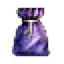
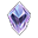

마법인형
소환하는 동안 캐릭터 곁에 머물며 효과를 줍니다. 캐릭터당 1개만 소환할 수 있고, 소환석 1개로 30분 유지됩니다. 사망, 로그아웃, 다른 인형으로 바꾸면 소환이 풀립니다.
획득

아르카의 마법인형 주머니
사용하면 1단계 6종 중 1개를 얻습니다. 기란 마을 마법인형 상인 아르카에게 구매합니다. 사망 드롭 O, 교환 O, 삭제 O, 창고 O.
소환석

소환석
소환에 쓰는 촉매입니다. 에티, 드레이크, 아이언 골렘, 실루엣 등에서 드롭되고, 기란 소린에게 제작하거나 떠돌이 상인 그로우에게 살 수 있습니다. 그로우는 하루 100개, 한시 등장입니다.
합성
같은 단계 완제품 4개를 재료로 넣습니다. 성공하면 한 단계 위 인형 1개, 실패하면 재료와 같은 단계 인형 1개를 받습니다. 3단계로 올릴 때는 고급 보석이 1개 더 필요합니다. 안전 지대에서만 되고, 소환 중이거나 봉인 중인 인형과 3단계 인형은 재료로 넣을 수 없습니다.
| 도전 | 성공 | 실패 |
|---|---|---|
| 2단계 | 40% | 60% |
| 3단계 | 30% | 70% |
1단계
ATS 등록 가능. 사망 시 드롭 X, 교환 O, 삭제 X, 창고 O.
| 인형 | 효과 |
|---|---|
 늑대인간 늑대인간 | 근거리 / 원거리 대미지 +1 |
 크러스트시안 크러스트시안 | 근거리 / 원거리 명중 +1 |
 에티 에티 | AC -1 |
 목각 목각 | 최대 MP +30 |
 버그베어 버그베어 | 무게 게이지 +200 |
 돌골렘 돌골렘 | 최대 HP +50 |
2단계
1단계와 같습니다. 소환석 1개, 30분, ATS 등록 가능. 사망 시 드롭 X, 교환 O, 삭제 X, 창고 O.
| 인형 | 효과 |
|---|---|
 코카트리스 코카트리스 | 원거리 대미지 +1, 원거리 명중 +1 |
 눈사람 눈사람 | 근거리 대미지 +1, 근거리 명중 +1 |
 서큐버스 서큐버스 | 64초마다 MP 회복 +15 |
 장로 장로 | 64초마다 MP 회복 +6, SP +1 |
 인어 인어 | AC -2, 최대 HP +30 |
 라바 골렘 라바 골렘 | 대미지 리덕션 +1 |
3단계
소환석 1개, 30분, ATS 등록 가능. 사망 시 드롭 X, 교환 O, 삭제 X, 창고 O. 합성 재료로는 쓸 수 없습니다.
| 인형 | 효과 |
|---|---|
 드레이크 드레이크 | 원거리 대미지 +2, 원거리 명중 +2 |
 킹 버그베어 킹 버그베어 | 근거리 대미지 +2, 근거리 명중 +2 |
 자이언트 자이언트 | AC -3, 최대 HP +50, 최대 MP +20 |
 흑장로 흑장로 | 64초마다 MP 회복 +15공격 시 일정 확률로 콜 라이트닝 발동 |
 서큐버스 퀸 서큐버스 퀸 | 64초마다 MP 회복 +15, SP +1 |
 다이아몬드 골렘 다이아몬드 골렘 | 대미지 리덕션 +2 |
공식 가이드 2026-10-20 기준. 게임과 다를 수 있습니다.